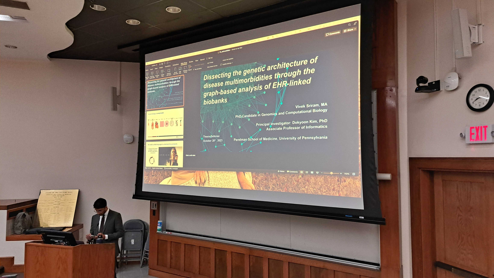

For my first “real” post, I figured it would be a helpful exercise to go through my professional journey and track how I ended up where I currently am. This description is meant to be more of an overview, and I intend to provide more details on individual portions of it in the future.

Having grown up in the Silicon Valley, I always had a front-row seat to the power and potential of technology to improve people’s lives. All of the biggest tech companies had their headquarters within driving distance from my home, and every day, I could see how they had impacted not only myself but also everyone around me: computers, cellphones, social media, education, automobiles, entertainment… everything was shaped by information technology. Both of my parents were in the software industry too, and seeing the productive, fulfilling jobs that they were able to have made me certain that I wanted to involve technology in my future career. Learning how to code from my mother in high school made me feel like I was being imparted with some special kind of magic - entering the world of software engineering truly felt right at my fingertips.
At the same time, growing up in the Silicon Valley felt like growing up in a bubble. I yearned to explore the link between information technology and its downstream applications beyond my baseline understanding of how to write code. So, I sought out more. In high school, I took a breadth of science classes, and I found myself inspired by the concept of “interdisciplinarity”. Instead of being drawn to “information technology,” I was drawn closer and closer to the world of “information science” and its applications to multiple disciplines, including biology and medicine. My drive for interdisciplinary experiences and my desire to explore a world of technological applications outside of the Bay Area led me to Duke University for my undergraduate education - in fact, one of the mantras of the university was “creative thinking across intellectual boundaries”. At Duke, I completed double majors in Computer Science and Statistics. Duke’s affiliated medical campus also gave me chances to explore interdisciplinary applications in the world of biomedical informatics, and I pursued multiple research opportunities, including an Honor’s thesis for my Statistics degree under the supervision of Dr. Li Ma. I also completed a minor in Computational Biology, taking classes such as Computational Genomics with Dr. Alexander Hartemink and Computational Structural Biology with Dr. Bruce Donald. Lastly, I was lucky to have great summer internship mentors (including Li-Yuan Chern at Pharmacyclics and Drs. Zichen Wang and Avi Ma’ayan at the Icahn School of Medicine), who kept me motivated and inspired to stick to my path and pursue an advanced interdisciplinary career.
By the end of my undergrad, I knew that I wasn’t going to enter the traditional computer science recruitment cycle for software engineering roles - I instead applied to doctoral programs in biomedical informatics and computational biology that would allow me to build my knowledge base further and prepare me to become a leader in impactful projects that made a clear benefit in people’s lives. I was lucky to earn an admission with the Genomics and Computational Biology program at the University of Pennsylvania Perelman School of Medicine. Again, great mentors from my classes and research rotations (including Drs. Ryan Urbanowicz and Marylyn Ritchie to name a few) helped advance my training and made me a better researcher and scientist day by day. I am most indebted to my PhD advisor, Dr. Dokyoon Kim, for his support and mentorship throughout my PhD and subsequent post-doctoral position. With his leadership style and work ethic, he was a true role model for me throughout my graduate degree. I also fell in love with the combination of technical research and scientific storytelling that came out of my dissertation (to be discussed in a later post). During my PhD, I was able to complete a Master’s degree in Statistics and Data Science from the Wharton School of Business under the supervision of Dr. Anderson Zhang, as well as a summer internship as a User Experience Researcher in Health AI/ML under the supervision of Dr. Mandi Hall with the Health Futures team at Microsoft Research. All of these opportunities helped me to refine a set of motivators for my long-term career:
- impact
- connection
- passion
- leadership
These values aided me tremendously in my search for my first job upon the completion of my PhD. Today, I work as a clinical data scientist in the Translational Analytics and Informatics group at the Fred Hutchinson Cancer Center’s Data Science Lab (DaSL) in Seattle, WA (also to be discussed more in a future post). I am tremendously grateful to be a part of a supportive, driven community of fellow data scientists and researchers as we develop the clinical data infrastructure at Fred Hutch, and I look forward to sharing more about my work and career as the years progress!